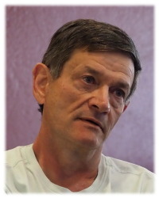

The memory-management development process
Hocko started by saying that he wanted a continuation of the development-process discussion held at the 2017 summit. He continues to be concerned about the amount of review that memory-management patches are receiving; by his count, about half of the patches being merged have not been seriously reviewed. He wondered whether the process is truly healthy, or whether it is putting too much load onto Andrew Morton to review everything. Perhaps, he suggested, it is time to move to a more hierarchical maintenance scheme where developers would take responsibility for specific parts of the memory-management problem and free up Morton's time for more high-level concerns.
Morton, though, replied that the community is doing well overall. The review rate for memory-management patches in the last merge window was, he said, 100%. He did confess, though, that this rate was achieved only because he started adding Reviewed-by tags of his own for the first time. The group could, he said, require Reviewed-by tags on everything over the long term but, in his experience, the presence of that tag is not a reliable indicator that a quality review has actually been done.
In any case, he said, memory management is doing better than many other parts of the kernel.
In the 2017 discussion, Morton said, he had told the group that any developer should inform him if they want to review a patch but don't have the time to do it right away. He would then hold the patch until the review could be done. But absolutely nobody has taken him up on that offer. There are, he said, about 120 memory-management patches going into the mainline in each development cycle; that is not enough to be worth the trouble to split up among multiple maintainers. Memory-management is doing well because its developers are generalists; splitting things up could instead encourage the creation of silos.
Hocko complained about Morton's longstanding practice of accumulating fixes to patches rather than replacing broken patches with better alternatives. See, for example, the March 28 mmotm tree, which includes these patches:
mm-initialize-pages-on-demand-during-boot.patch
mm-initialize-pages-on-demand-during-boot-fix-3.patch
mm-initialize-pages-on-demand-during-boot-fix-4.patch
mm-initialize-pages-on-demand-during-boot-fix-4-fix.patch
mm-initialize-pages-on-demand-during-boot-v5.patch
mm-initialize-pages-on-demand-during-boot-v5-fix.patch
mm-initialize-pages-on-demand-during-boot-v6.patch
mm-initialize-pages-on-demand-during-boot-v6-checkpatch-fixes.patch
When faced with an accumulation of patches like that, Hocko said, it is easy to lose track of the overall picture. Morton replied that if he were using Git (as many have often suggested) those fixes would be there forever. The answer to that was that he could rebase things, or just wait until patches are in better shape before accepting them.
On that last point, Hocko said that there is usually no rush to get patches into the -mm tree, so it might not hurt to wait until patches improve. But Hugh Dickins said that acceptance into -mm is when patches really get tested. Morton said that he sees his role as being to help developers get patches into the mainline; if a patch has benefits, he feels he should bring it in, even if it's still shaky. He has never agreed with the "a maintainer's job is to say 'no'" philosophy. Dickins said that was useful, but there is also a need for somebody to say "no" sometimes. Morton is good, he said to laughter, while Hocko is evil (he was referring to this recent exchange on the list).
Returning to the "-fix" patches, Morton asked whether he should just merge them into the patches they are fixing. Johannes Weiner replied that it depends on the situation. For things like typo fixes, they might as well just be folded into the original. Complex fixes, though, should probably be kept separate.
Morton brought up the "HMM problem", referring to the heterogeneous
memory-management patches which went through 24 revisions on the list
without being seriously reviewed. Rik van Riel said that the problem is

Hocko said that the lack of a Git tree for memory management makes life harder. It would be good, he said, to have a tree that contains the work destined for the next merge window. Morton said that he could do that if it would help. Hocko said that it would provide a stable base for developers to work against; at the moment, they tend to base memory-management patches on any of a number of random trees. Having a Git tree would also make it easier to add submaintainers, should the group decide to do so. He repeated that this would be a good thing to do since it would take some of the load of off Morton, who replied that reviewing memory-management patches is what he's paid to do, and it's not overwhelming him. There are, he said, roughly ten major patches to review each week, which is not too heavy a burden.
Hocko insisted, though, that there are large features in the memory-management area that are not moving forward. There is also, he said, a lack of an overall vision for the subsystem. He cited memory hotplug as a particular problem area; "people just add hacks" and nobody actually wants to do anything with that code at this point if they can avoid it. But Morton repeated that memory management is doing well, with the code being stable overall and an improving review rate.
Dan Williams put out a request for more employers to support their developers spending time to review code by others. Dave Hansen asked how the group felt about Reviewed-by tags from people working for the same company as the submitter of the patch. That is something he tends not to do, since it "feels incestuous". Matthew Wilcox said that each developer needs to come to their own conclusion on how much weight to give such reviews; their quality can vary considerably. Hocko said he tends to be skeptical of first-post patches with five reviews from people he has never heard of before.
As this session (the last one on Monday) wound down and beer was beckoning,
Laura Abbott asked whether memory management could benefit from a patchwork
instance; van Riel said that it could help developers find patches to
review. Hocko repeated that adoption of a Git tree would help with a lot
of things in general. Whether these things will happen, or whether they
will simply return as topics in the 2019 LSFMM Summit, remains to be seen.
| Index entries for this article | |
|---|---|
| Kernel | Development model/Code review |
| Conference | Storage, Filesystem, and Memory-Management Summit/2018 |
Posted Apr 28, 2018 17:30 UTC (Sat)
by shak (subscriber, #104760)
[Link] (1 responses)
Posted Apr 28, 2018 17:55 UTC (Sat)
by andresfreund (subscriber, #69562)
[Link]
patchwork for linux-mm
patchwork for linux-mm